Resumen
“Mariano Rubelt Motos” es un micro emprendimiento familiar, este se dedica a la
venta de repuestos para motocicleta. Con veintidós años de experiencia en el rubro,
consta con dos sucursales en distintas localidades, siendo su sede central y
principal la sucursal que se encuentra en Libertador General San Martin.
Para dicha pyme se le fue realizado un sistema web para que sus empleados y
dueños tengan un mejor control de stock, precios, materiales, datos de los
empleados y datos de los propietarios. A lo largo del este archivo se describen y
explican principalmente sus políticas de seguridad, su diseño y se adjuntan un
manual de uso. Se especifican las metodologías y herramientas utilizadas para su
posterior desarrollo. Los requisitos para el sistema (los datos) son narrados.
Se adjuntará un diagrama de contexto y un diagrama de flujo de datos. Se explican
los niveles de usuario y el ciclo de vida utilizado para el desarrollo del sitio web.
Introducción
Se desarrolló una página web para el emprendimiento “Mariano Rubelt Motos”, una
empresa dedicada a la venta de repuesto para motos. Este proyecto tuvo como
objetivo principal fortalecer la presencia digital del negocio, mejorando su visibilidad
y accesibilidad para sus dueños y empleados.
La página web fue diseñada y construida teniendo en cuenta tanto las necesidades
específicas del emprendimiento como las mejores prácticas en desarrollo web.
Entre las funcionalidades implementadas se destacan: control de stock de
productos, control de ventas, control de empleados, control de finanzas, ingresos y
egresos de dinero.
El presente documento detalla las etapas del desarrollo del sitio web, incluyendo el
análisis de requerimientos, diseño de interfaz, implementación técnica y pruebas
finales. Asimismo, se reflexiona sobre los desafíos enfrentados y los aprendizajes
adquiridos durante el proceso, destacando el impacto positivo que este proyecto
tiene para el crecimiento del emprendimiento en un mercado altamente competitivo.
Objetivos
Mayor control del stock.
Mejor control del precio de los productos
Productos faltantes.
Control de empleados.
Control de impuestos a pagar
Control salarial de los empleados.
Datos de los empleados existentes.
Datos de los propietarios.
Ingresos de dinero del mes.
Egresos de dinero mes.
Metodologías y Herramientas
Metodología
La metodología implementada en este proyecto fue kanban; es un sistema visual
diseñado para optimizar el flujo de trabajo, reducir cuellos de botella y aumentar la
eficiencia. Se basa en principios simples que permiten a los equipos organizar,
priorizar y realizar tareas de manera continua.
Fue elegida debido a sus beneficios:
MAYOR VISIBILIDAD: del estado de las tareas.
Facilita la PRIORIZACIÓN y asignación de recursos
Mejora la COLABORACIÓN entre los equipos.
Permite una ENTREGA CONTINUA de resultados, ideal para proyectos con
requisitos cambiantes.
Herramientas
Las herramientas utilizadas para la realización del proyecto fueron:
Visual studio code.
HTML.
PHP.
CSS.
Xampp.
Mysql.
Requisitos del sistema.
Los requisitos para la correcta realización del sistema fueron brindados por el cliente
de una manera clara y concisa. Sus requisitos fueron:
El sistema debía tener un login para su acceso por tarde del cliente y de sus
empleados
La presentación debía ser el logo de su negocio.
El menú de opciones debía contener, para el administrador la opción
“Empleados”, “Productos”, “Ingresos Mensuales”, “Egresos Mensuales”,
“Impuestos” y “Faltantes. En la parte de empleados debía contener la
información personal de los empleados y su sueldo; en ingresos mensuales
se debe mostrar la cantidad de dinero que ingreso en el mes; en egresos
mensuales se muestra en que fue gastado el dinero que ingreso en el mes;
en impuestos muestra justamente los impuestos a pagar en el mes y el dinero
destinado para este gasto; en productos se muestra el nombre del producto,
la cantidad en stock y su precio; y por último en faltantes contiene los
productos que están en falta. Para la parte del login que corresponde a los
empleados el menú de opciones solo debe mostrar “Productos” y “Faltantes”.
Los colores debían ser el negro y el amarillo
Debía adaptarse a cualquier dispositivo.
Especificaciones
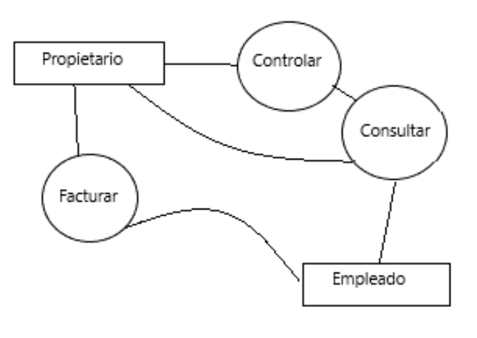
Diagrama de Flujo de Datos
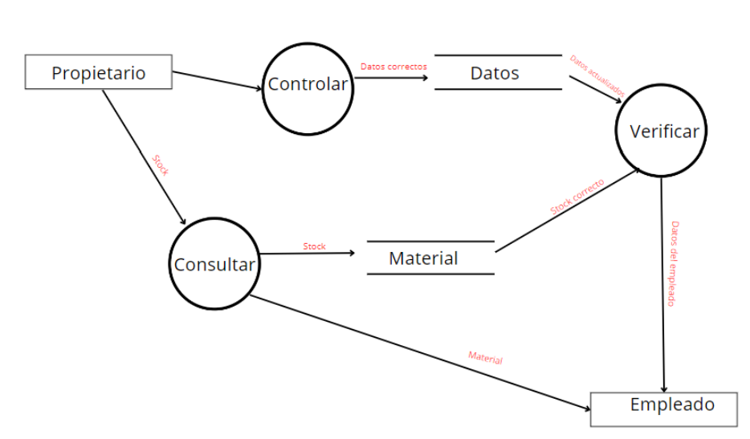
Interfaz del Sistema.
La interfaz del sistema en un sitio web es el punto de contacto o conexión entre el
sistema web y otros componentes externos, ya sean usuarios, aplicaciones o
servicios. Se refiere a como el sitio interactúa y se comunica con el entorno, ya sea
a través de interfaces gráficas para los usuarios finales o interfaces técnicas.
Presentación:
Es la cara del sistema y se ve de la siguiente manera:
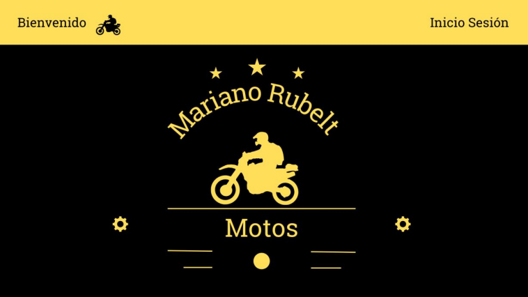
Login:
En el login los usuarios ingresan al sistema web. Dependiendo del nivel es
cómo será el uso del sistema. También tiene una opción de por si el usuario
olvida la contraseña, la cual le permite poder recuperar la contraseña.
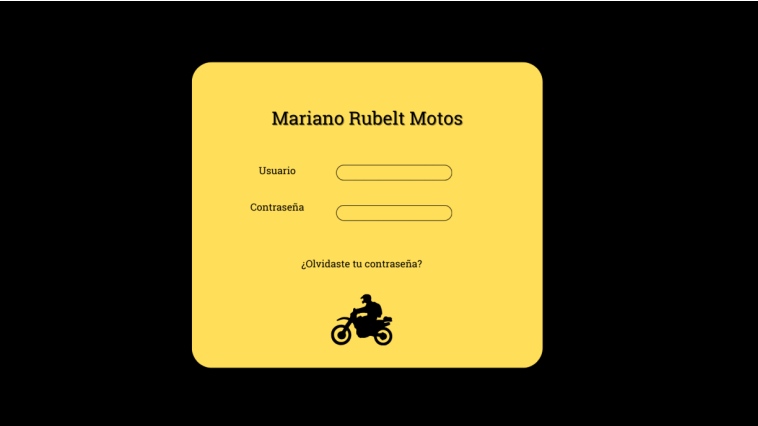
Menú de opciones:
Dependiendo del nivel de usuario es como se verá el menú. Si el usuario es
de nivel superior se vera de la siguiente manera:
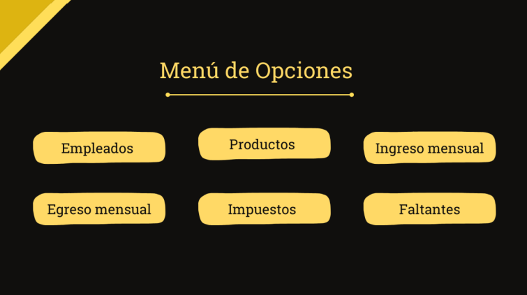
Mientras que si el usuario es de un nivel inferior el menú de opciones se verá asi:
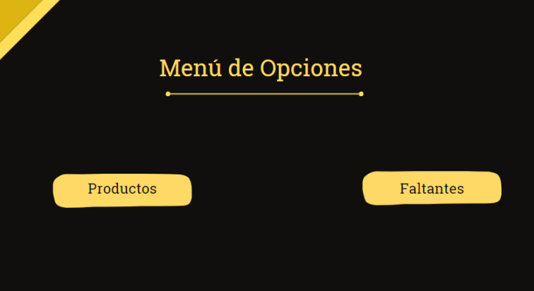
Estas restricciones que tiene el nivel inferior fueron pedidas por el cliente.
Opción “Empleado”:
Aquí el cliente que tiene un nivel superior puede cargar, modificar, ver o
eliminar los datos de los empleados. Se hace visible en esta opción los datos
personales de los empleados tales como nombre y apellido, DNI y el salario.
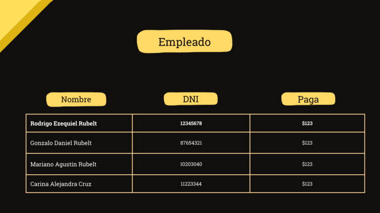
Opción “Producto”:
Esta sección contiene los productos, el stock de los mismo y su precio. Se
puede modificar, agregar o eliminar productos. A esta sección tienen acceso
tanto los niveles superiores y los inferiores.
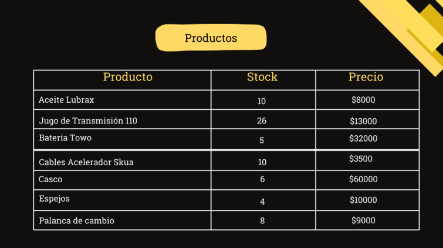
Opción “Ingreso Mensual”:
Aquí los usuarios de nivel superior ven los ingresos de dinero que tienen en
el mes, de donde provienen dichos ingresos y el total acumulado.
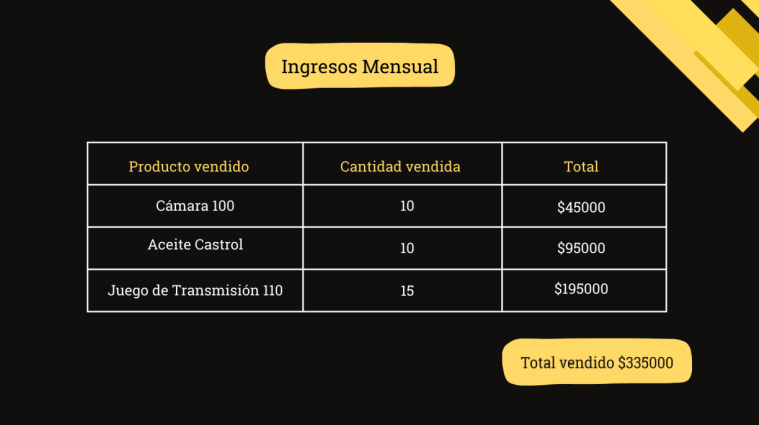
Opción “Egresos Mensuales”:
Aquí se aprecian los gastos imprevistos que se pueden llegar a tener, se
hace visible en que se gasta el dinero y muestra un total acumulado de
pérdidas.
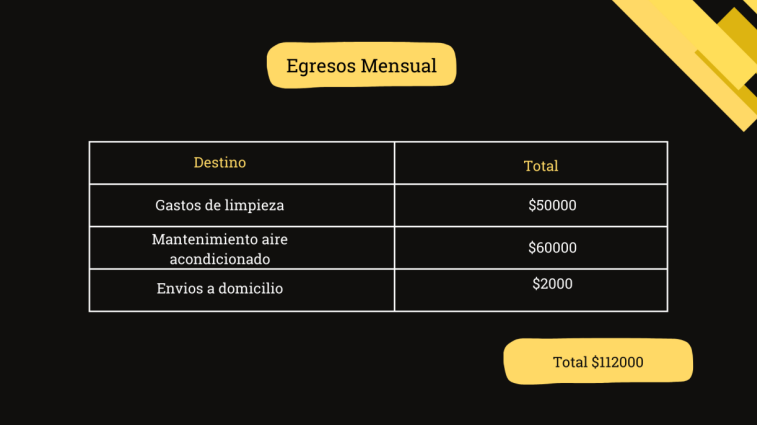
Opción “Impuesto”:
En esta sección se muestran los impuestos a pagar y el total de cada uno.
Se calcula el monto aproximado de lo que se gastara en impuestos cada
mes.
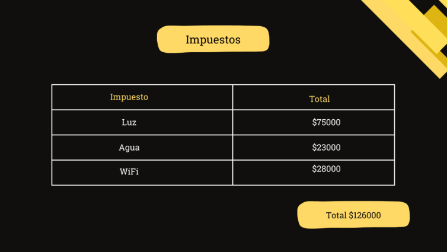
Opción “Faltantes”:
Aquí se puede apreciar todos los productos que faltan y que se deben de
reponer para su posterior venta.
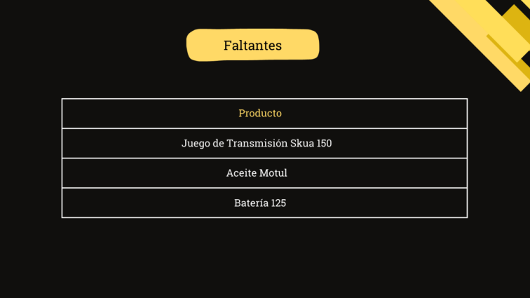
Niveles de Usuario
En un sistema web, los niveles de usuario se refieren a las diferentes categorías o
roles que determinan los permisos y accesos que tiene cada usuario, en el sistema
web hecho para “Mariano Rubelt Motos” los niveles de usuarios que se utilizaron
fueron:
Roles:
Propietario: gestiona todas las actividades que se pueden realizar en el
sistema.
Empleados: accede solamente a dos funciones básicas, determinadas por
el dueño del emprendimiento.
Permisos de cada rol:
Propietario: accede a todas las funciones del sistema, empleados,
productos, ingresos mensuales, egresos mensuales, faltantes e impuestos.
Empleados: accede únicamente a las funciones productos y faltantes.
Ciclo de Vida
El ciclo de vida utilizado para el desarrollo del sistema web fue el ciclo de vida
prototipado, es una metodología de desarrollo de software que se centra en crear
prototipos antes de desarrollar el producto final. A continuación de contamos como
lo implementamos:
Etapas:
1. IDENTIFICACIÓN DE REQUISITOS INICIALES: se le realizó una entrevista al cliente
para saber bien sus requisitos.
2. DISEÑO RÁPIDO: se realizó un diseño preliminar para saber cuáles son los
gustos del cliente
3. CREACIÓN DEL PROTOTIPO: se desarrolló un prototipo básico
4. EVOLUCIÓN DEL PROTOTIPO POR EL USUARIO: el cliente prueba el prototipo para
identificar los problemas que puede llegar a tener y aclara sus requisitos.
5. REFINAMIENTO DEL PROTOTIPO: se mejora el prototipo y se lo actualiza.
6. DESARROLLO DEL SISTEMA FINAL: una vez que el prototipo cumple con todos
los requisitos, se comienza a desarrollar el sistema final. En esta etapa se
optimizar el código y se asegura la calidad del software.
7. IMPLEMENTACIÓN Y MANTENIMIENTO: se despliega el sistema final y comienza
a utilizarse. De ser necesario se le realiza un mantenimiento.
Las ventajas que tuvimos al utilizar este ciclo de vida fueron
CLARIDAD EN LOS REQUISITOS: el cliente al visualizar antes de llegar al fin del
sistema ayudo a pulir los detalles
MAYOR SATISFACCIÓN DEL CLIENTE: los ajustes se realizaron a tiempo según
las expectativas que tenía el cliente.
REDUCCIÓN DE RIEGOS: identificar los problemas antes de la construcción del
sistema ayudo a evitar riegos.
DESARROLLO INTERACTIVO: facilito la mejora continua.
Las desventajas que se presentaron fueron:
EXPECTATIVAS IRREALES: el cliente confundió el prototipo con el producto final.
INCREMENTO EN EL TIEMPO Y COSTO: las reuniones con el cliente extendieron el
plazo de entrega.
FALTA DE DOCUMENTACIÓN: el cliente no proporciono todos los datos de los
empleados; proporciono mal la información de los productos que tiene en
venta.
ENFOQUE EXCESIVO EN LA INTERFAZ: el cliente priorizo la apariencia del sistema
antes que su funcionalidad.
Manual de Usuario
PRESENTACIÓN: contiene la opción “Inicio Sesión”, hacemos click;
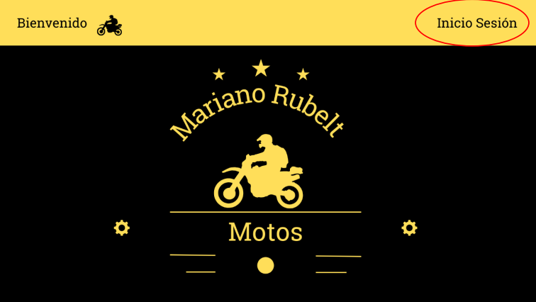
INICIO SESIÓN: luego de hacer click en “Inicio Sesión” nos parecerá un login
en el cual pondremos nuestro usuario y la contraseña. En el caso de haber
olvidado la contraseña nos aparece la opción “¿Olvidaste tu contraseña?”
que nos ayudara a recuperar la contraseña.
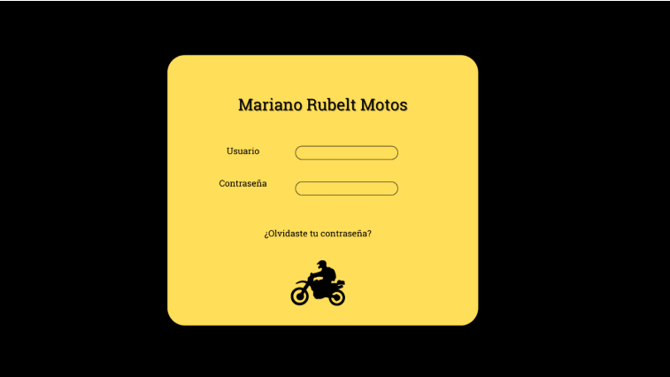
MENÚ DE OPCIONES: al ingresar al sistema web nos aparece un menú de
opciones que varía según el nivel de autorización que presenta el usuario,
por ejemplo, si ingresa el propietario del negocio a parecerá de la siguiente
manera:
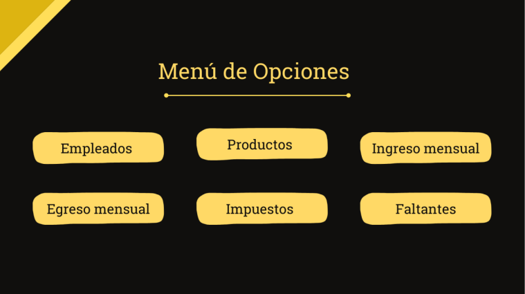
A diferencia del usuario del empleado que aparece de la siguiente manera:
EMPLEADOS: en la opción el propietario puede cargar datos de los empleados,
modificarlos o eliminar datos cuando lo desea. En esta área aparecen el
nombre y apellido de cada empleado, su DNI y el salario que cobra.
PRODUCTOS: en esta sección se encuentras los productos que hay en stock,
su cantidad y su precio. Tanto el propietario del negocio como los empleados
pueden hacer uso de esta función cargando, modificando o eliminando
productos como lo deseen.
INGRESO MENSUAL: en esta área se muestran los ingresos mensuales y de
donde provienen, solamente puede acceder a esta opción el propietario del
negocio, este puede cargar más ingresos, modificar o eliminar el ingreso.
EGRESO MENSUAL: en esta sección el empleador tiene un registro en lo que
gasta se gasta el dinero, este puede también cargar, modificar o eliminar
egresos según su deseo
IMPUESTOS: aquí se cargan los impuestos a pagar con sus respectivos
montos. Se pueden modificar también o eliminar los impuestos que ya no
sean útiles.
FALTANTES: aquí se cargan todos los productos que faltan en el inventario del
negocio.
Políticas de Seguridad
Los administradores del sitio deberán usar contraseñas seguras y cambiarlas
cada 90 días.
Implementar autentificación multifactor para cuentas administrativas.
Limitar los intentos de inicio de sesión fallidos para prevenir ataques de
fuerza bruta.
Restringir el acceso al panel de administración a direcciones IP confiables.
Se cifran todas las comunicaciones utilizando un HTTPS.
No almacenar datos confidenciales en el servidor del sitio.
Permitir a los usuarios acceder y eliminar su información personal conforme
a la legislación aplicables.
Implementar una política de privacidad clara en el sitio que detalle el uso de
los datos recopilados.